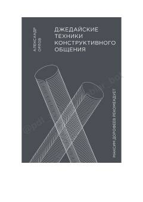

ДТIshda va jamoada samarali hamda konstruktiv muloqot qurish sirlari.
Kitob ish jarayonida va jamoada konstruktiv muloqot qilish, samarali muzokaralar olib borish hamda murakkab boshqaruv keyslarini hal qilish ko'nikmalarini o'rgatadi. Muallif amaliy misollar va tayyor kommunikatsion vositalar orqali boshqalarni tushunish, qarama-qarshiliklarni bartaraf etish usullarini taqdim etadi. Asar menejerlar, rahbarlar va professional muloqot ko'nikmalarini oshirishni istaganlar uchun mo'ljallangan.